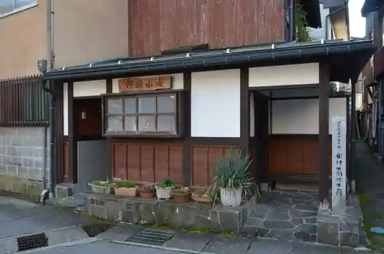
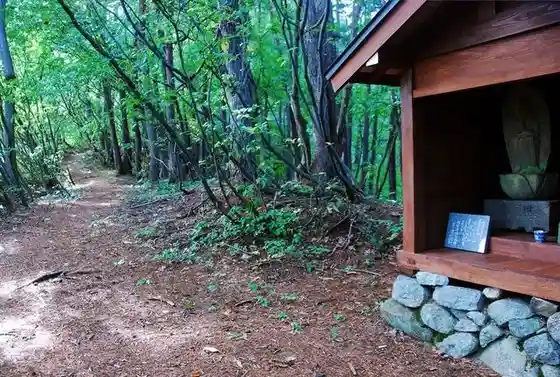
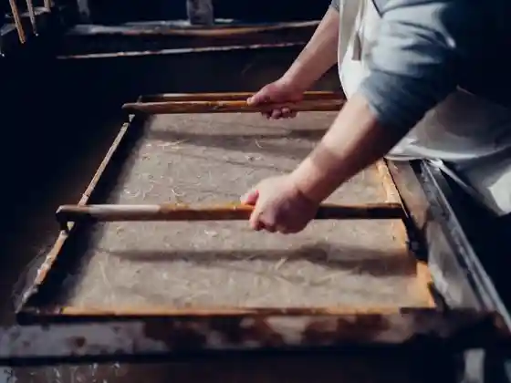

Hida Ryuyo Kantoriiuoku
Hida, Gifu · 0578-82-0916 · Official / source link
Kamioka no Kyodo Mizuya
Hida, Gifu · 0578-82-2253 · Official / source link

Kannon Yama
Hida, Gifu · Official / source link

Inaka Kogei Kan
Hida, Gifu · 0577-65-2912 · Official / source link

Hineno Art Museum &Cafe
Hida, Gifu · 0577-73-6257 · Official / source link
Saiko Tera Cherry Blossoms
Hida, Gifu · 0577-73-3019 · Official / source link
Garasu Art Museum Koma
Hida, Gifu · 0577-73-6550 · Official / source link
Teori Ri Yu Koromo Workshop
Hida, Gifu · 0577-73-7066 · Official / source link
Yusui Ike Tsuri
Hida, Gifu · 0577-65-2466 · Official / source link
Kurochi Orchard
Hida, Gifu · 0120-377-262 · Official / source link
Yamada Kawa Cherry Blossoms
Hida, Gifu · 0578-82-2253 · Official / source link
Kashiwabara no Koya Sakura
Hida, Gifu · 0578-82-2250 · Official / source link
Jigan Tera no Chingo Sakura
Hida, Gifu · 0577-75-2105 · Official / source link
Kamioka Shinko Jimusho Cherry Blossoms
Hida, Gifu · 0578-82-2250 · Official / source link
Ashita no Takara Mo no (Tanada to Itakura no Fukei) to Yamazato Bunka
Hida, Gifu · 0577-63-2888 · Official / source link
Etchu Nishi Kaido Ajisairodo
Hida, Gifu · 0577-73-2111 · Official / source link
Sakamaki Park Cherry Blossoms
Hida, Gifu · 0578-82-2253 · Official / source link
Chiyo no Matsubara Park Cherry Blossoms
Hida, Gifu · 0577-73-2111 · Official / source link
Rinsho Tera
Hida, Gifu · 0577-73-2488 · Official / source link
Etchu Nishi Kaido (Kokudo 360 Go) no Autumn Leaves
Hida, Gifu · 0577-73-2111 · Official / source link
Shin Hora Marsh
Hida, Gifu · 0578-82-2250 · Official / source link
Kyushin Oka Tetsudo Kidosha (Okuhida Go) Unten Experience
Hida, Gifu · 0578-82-6677 · Official / source link
Doun Tera
Hida, Gifu · 0578-82-1210 · Official / source link
Hida Sugo Resort & Kantorii Club
Hida, Gifu · 0577-75-2111 · Official / source link
Rerumauntembaiku Cherry Blossoms
Hida, Gifu · 090-7020-5852 · Official / source link
Nakagawa Yoichi Bungaku Shiryoshitsu
Hida, Gifu · 0578-82-5890 · Official / source link
Hida Furukawa Jinrikisha I
Hida, Gifu · 080-1629-9492 · Official / source link
FabCafe Hida
Hida, Gifu · 0577-57-7686 · Official / source link
Tombo Tama Kazari
Hida, Gifu · 0577-73-2366 · Official / source link
Takibi Ya
Hida, Gifu · 090-3584-7687 · Official / source link
Yakuso Koso Onyoku Slow Time
Hida, Gifu · 0120-78-2340 · Official / source link
Furukawa Matsuri Yatai Kura Sutanpurarii
Hida, Gifu · Official / source link
WOLEPACO
Hida, Gifu · 0578-86-9023 · Official / source link
Hida Shokunin Seikatsu
Hida, Gifu · 0577-73-7703 · Official / source link
Mozumi Sei Mura Shoten - Kotodama no Kyou
Hida, Gifu · Official / source link
Sugo Kogen Ragubii Ba
Hida, Gifu · Official / source link
Maki Sei Sha
Hida, Gifu · 0577-73-2226 · Official / source link
Noguchi Castle Ruins
Hida, Gifu · 0577-73-7496 · Official / source link
Kotaka Ri Castle Ruins
Hida, Gifu · 0577-73-7496 · Official / source link
Ryuyo Shinpi no Mori Kosu (Su no Shu Tour)
Hida, Gifu · Official / source link
Ryuyo Sancho Juhyo Kosu (Su no Shu Tour)
Hida, Gifu · Official / source link